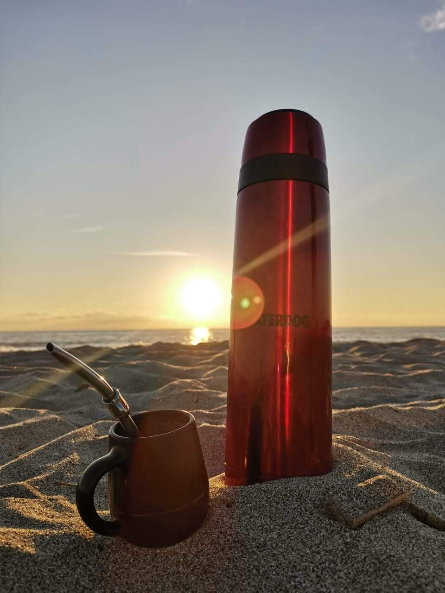

El mundo, con buen sabor
Guías de destinos para planificar tu próximo viaje: cuándo ir, cómo llegar, qué hacer, qué probar y qué traerte de recuerdo.
Elegí tu continente
Empezamos por América y vamos sumando destinos de todo el mundo.
América
6 destinosDe la Patagonia al Caribe, pasando por ciudades, selvas, montañas y viñedos.
Europa
PróximamenteCapitales históricas, pueblos con encanto y rutas de vino y café.
Asia
PróximamenteTemplos, mercados, ciudades enormes y cocinas para descubrir.
África
PróximamenteDesiertos, safaris y costas para viajes inolvidables.
Oceanía
PróximamenteIslas, playas y naturaleza en el otro extremo del mundo.
Destinos destacados
Cada guía reúne lo esencial para planificar: la mejor época, cómo llegar, los imperdibles y los sabores del lugar.
Barrios con identidad propia, cafés notables, tango y una de las escenas gastronómicas más intensas del continente.
Una pared de hielo de 5 km de frente sobre el Lago Argentino, que avanza y se rompe frente a tus ojos. Uno de los grandes espectáculos naturales de la Patagonia.
La ciudad de la Bandera, frente al río Paraná: costanera, islas, arquitectura, bares y una de las mejores escenas gastronómicas del interior argentino.
Un centro histórico Patrimonio de la Humanidad, el acueducto, la Peña de Bernal y la Ruta del Arte, Queso y Vino, a pocas horas de la Ciudad de México.
Una de las ciudades más grandes del mundo: pirámides, museos, barrios con historia y una de las mejores escenas gastronómicas del planeta.
La capital mexicana del calzado y la piel: compras a precio de fábrica, ferias, el Festival del Globo y la puerta de entrada al Bajío.
Cada lugar tiene un sabor para llevarte
Viajar a Mendoza es conocer el Malbec; recorrer Misiones es entender la yerba mate. Por eso cada guía se conecta con los productos de ese lugar en la Tienda y con las notas del Blog.
Organizá tu viaje
Reservá con nuestros aliados y resolvé tus dudas antes de salir.
Vuelos, hoteles y paquetes
Buscá y compará vuelos, alojamiento, autos y paquetes con nuestros aliados para reservar tu viaje.
- Vuelos y hoteles en todo el mundo.
- Paquetes con vuelo y alojamiento.
- Autos, traslados y asistencia al viajero.
Tu asistente de viaje
Muy pronto vas a poder consultarnos lo que necesites: qué ver, cómo moverte, qué llevar y qué probar en cada destino.
PróximamenteMis recomendaciones y tips
Experiencias, consejos y lugares que recomiendo para inspirar tu próximo destino.
Historias de viaje
Lo que viví en cada lugar: recorridos, encuentros y sabores.
PróximamenteConsejos prácticos
Qué llevar, cómo moverte, cuándo ir y cómo ahorrar.
PróximamenteLugares que recomiendo
Hoteles, restaurantes y experiencias que valen la pena.
PróximamenteTienda para viajeros
Estamos armando una selección de productos para tu próxima aventura.